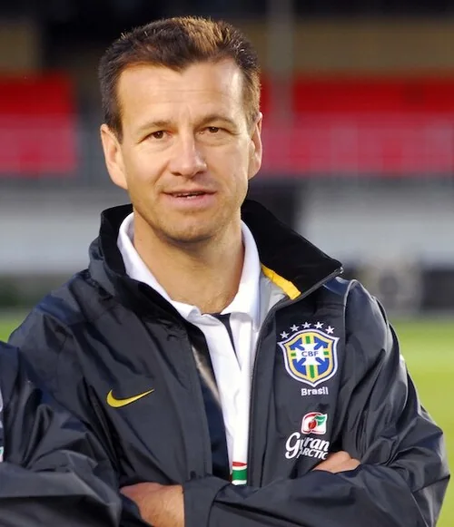

Photo source ↗Aécio Neves from Brasília, Brasil · CC BY 2.0
The profile
Dunga
Dunga was a Brazilian defensive midfielder known for positioning, passing and leadership. He became captain of a side built around a strong collective structure.
Dunga played club football in Brazil, Italy, Germany and Japan. In midfield he protected the defence, moved the ball efficiently and set a demanding standard for teammates.
Dunga captained Brazil to the 1994 World Cup title. The final against Italy ended 0–0, and Brazil won the penalty shootout.
1990Italy
Round of 16
Group C Brazil2 : 1Sweden
- CARECA40′
- CARECA63′
- Tomas BROLIN79′
Brazilhome
Starting lineup
- TAFFAREL
- JORGINHO
- RICARDO GOMES
- BRANCO
- MOZER
- MAURO GALVAO
- DUNGA
- ALEMAO
- VALDO
- CARECA
- MULLER
Substitutions
- 82′SILAS on · VALDO off
Swedenaway
Starting lineup
- Thomas RAVELLI
- Peter LARSSON
- Roger LJUNG
- Roland NILSSON
- Stefan SCHWARZ
- Klas INGESSON
- Anders LIMPAR
- Joakim NILSSON
- Jonas THERN
- Tomas BROLIN
- Mats MAGNUSSON
Substitutions
- 45+1′Stefan PETTERSSON on · Mats MAGNUSSON off
- 70′Glenn STROMBERG on · Roger LJUNG off
Group C Brazil1 : 0Costa Rica
- MULLER33′
Brazilhome
Starting lineup
- TAFFAREL
- JORGINHO
- RICARDO GOMES
- BRANCO
- MOZER
- MAURO GALVAO
- DUNGA
- ALEMAO
- VALDO
- CARECA
- MULLER
Substitutions
- 83′BEBETO on · CARECA off
- 86′SILAS on · VALDO off
Costa Ricaaway
Starting lineup
- Gabelo CONEJO
- Roger FLORES
- Ronald GONZALEZ
- Jose CHAVES
- Mauricio MONTERO
- German CHAVARRIA
- Oscar RAMIREZ
- Roger GOMEZ
- Hector MARCHENA
- Claudio JARA
- Juan CAYASSO
Substitutions
- 71′Roy MYERS on · Claudio JARA off
- 78′Alexandre GUIMARAES on · Juan CAYASSO off
Group C Brazil1 : 0Scotland
- MULLER81′
Brazilhome
Starting lineup
- TAFFAREL
- JORGINHO
- RICARDO GOMES
- BRANCO
- RICARDO ROCHA
- MAURO GALVAO
- DUNGA
- ALEMAO
- VALDO
- CARECA
- ROMÁRIO
Substitutions
- 65′MULLER on · ROMÁRIO off
Scotlandaway
Starting lineup
- Jim LEIGHTON
- Alex McLEISH
- Maurice MALPAS
- Stewart McKIMMIE
- David McPHERSON
- Roy AITKEN
- Paul McSTAY
- Murdo McLEOD
- Stuart McCALL
- Mo JOHNSTON
- Alistair McCOIST
Substitutions
- 39′Gary GILLESPIE on · Murdo McLEOD off
- 79′Robert FLECK on · Alistair McCOIST off
Round of 16 Brazil0 : 1Argentina
- Claudio CANIGGIA81′
Brazilhome
Starting lineup
- TAFFAREL
- JORGINHO
- RICARDO GOMES
- BRANCO
- RICARDO ROCHA
- MAURO GALVAO
- DUNGA
- ALEMAO
- VALDO
- CARECA
- MULLER
Substitutions
- 83′SILAS on · ALEMAO off
- 85′RENATO PORTALUPPI on · MAURO GALVAO off
Argentinaaway
Starting lineup
- Sergio GOYCOCHEA
- Pedro MONZON
- Oscar RUGGERI
- Juan SIMON
- Jose BASUALDO
- Jorge BURRUCHAGA
- Diego MARADONA
- Ricardo GIUSTI
- Julio OLARTICOECHEA
- Pedro TROGLIO
- Claudio CANIGGIA
Substitutions
- 61′Gabriel CALDERON on · Pedro TROGLIO off
1994USA
Champion
Group B Brazil2 : 0Russia
- ROMÁRIO26′
- RAI52′ · pen.
Brazilhome
Starting lineup
- TAFFAREL
- JORGINHO
- RICARDO ROCHA
- MARCIO SANTOS
- MAURO SILVA
- DUNGA
- ZINHO
- RAI
- LEONARDO
- BEBETO
- ROMÁRIO
Substitutions
- 75′ALDAIR on · RICARDO ROCHA off
- 85′MAZINHO on · DUNGA off
Russiaaway
Starting lineup
- Dmitri KHARIN
- Dmitri KUZNETSOV
- Sergei GORLUKOVICH
- Yuri NIKIFOROV
- Vladislav TERNAVSKI
- Dmitri KHLESTOV
- Andrei PIATNITSKI
- Valeri KARPIN
- Ilia TSYMBALAR
- Dmitri RADCHENKO
- Sergei YURAN
Substitutions
- 55′Oleg SALENKO on · Sergei YURAN off
- 77′Aleksandr BORODYUK on · Dmitri RADCHENKO off
Group B Brazil3 : 0Cameroon
- ROMÁRIO39′
- MARCIO SANTOS66′
- BEBETO73′
Brazilhome
Starting lineup
- TAFFAREL
- JORGINHO
- ALDAIR
- MARCIO SANTOS
- MAURO SILVA
- DUNGA
- ZINHO
- RAI
- LEONARDO
- BEBETO
- ROMÁRIO
Substitutions
- 75′PAULO SERGIO on · ZINHO off
- 81′MULLER on · RAI off
Cameroonaway
Starting lineup
- Joseph Antoine BELL
- Rigobert SONG
- Raymond KALLA
- Stephen TATAW
- Hans AGBO
- Thomas LIBIIH
- Emile MBOUH
- Louis MFEDE
- Marc-Vivien FOE
- Francois OMAM-BIYIK
- David EMBE
Substitutions
- 64′Roger MILLA on · David EMBE off
- 72′Emmanuel MABOANG on · Louis MFEDE off
Group B Brazil1 : 1Sweden
- ROMÁRIO46′
- Kennet ANDERSSON23′
Brazilhome
Starting lineup
- TAFFAREL
- JORGINHO
- ALDAIR
- MARCIO SANTOS
- MAURO SILVA
- DUNGA
- ZINHO
- RAI
- LEONARDO
- BEBETO
- ROMÁRIO
Substitutions
- 45+1′MAZINHO on · MAURO SILVA off
- 83′PAULO SERGIO on · RAI off
Swedenaway
Starting lineup
- Thomas RAVELLI
- Roland NILSSON
- Patrik ANDERSSON
- Roger LJUNG
- Pontus KAMARK
- Stefan SCHWARZ
- Klas INGESSON
- Jonas THERN
- Henrik LARSSON
- Tomas BROLIN
- Kennet ANDERSSON
Substitutions
- 64′Jesper BLOMQVIST on · Henrik LARSSON off
- 75′Hakan MILD on · Stefan SCHWARZ off
Round of 16 Brazil1 : 0United States
- BEBETO72′
Brazilhome
Starting lineup
- TAFFAREL
- JORGINHO
- ALDAIR
- MARCIO SANTOS
- MAURO SILVA
- DUNGA
- ZINHO
- LEONARDO
- MAZINHO
- BEBETO
- ROMÁRIO
Substitutions
- 68′CAFU on · ZINHO off
United Statesaway
Starting lineup
- Tony MEOLA
- Thomas DOOLEY
- Marcelo BALBOA
- Paul CALIGIURI
- Fernando CLAVIJO
- Alexi LALAS
- Hugo PEREZ
- Tab RAMOS
- Cobi JONES
- Michael SORBER
- Earnie STEWART
Substitutions
- 45′Eric WYNALDA on · Tab RAMOS off
- 66′Roy WEGERLE on · Hugo PEREZ off
Quarterfinal Netherlands2 : 3Brazil
- Dennis BERGKAMP64′
- Aron WINTER76′
- ROMÁRIO53′
- BEBETO63′
- BRANCO81′
Netherlandshome
Starting lineup
- Ed DE GOEY
- Ronald KOEMAN
- Stan VALCKX
- Frank RIJKAARD
- Rob WITSCHGE
- Jan WOUTERS
- Wim JONK
- Aron WINTER
- Marc OVERMARS
- Dennis BERGKAMP
- Peter VAN VOSSEN
Substitutions
- 54′Bryan ROY on · Peter VAN VOSSEN off
- 64′Ronald DE BOER on · Frank RIJKAARD off
Brazilaway
Starting lineup
- TAFFAREL
- JORGINHO
- BRANCO
- ALDAIR
- MARCIO SANTOS
- MAURO SILVA
- DUNGA
- ZINHO
- MAZINHO
- BEBETO
- ROMÁRIO
Substitutions
- 80′RAI on · MAZINHO off
- 89+59′CAFU on · BRANCO off
Semifinal Sweden0 : 1Brazil
- ROMÁRIO80′
Swedenhome
Starting lineup
- Thomas RAVELLI
- Roland NILSSON
- Patrik ANDERSSON
- Joachim BJORKLUND
- Roger LJUNG
- Klas INGESSON
- Jonas THERN
- Hakan MILD
- Martin DAHLIN
- Tomas BROLIN
- Kennet ANDERSSON
Substitutions
- 67′Stefan REHN on · Martin DAHLIN off
Brazilaway
Starting lineup
- TAFFAREL
- JORGINHO
- BRANCO
- ALDAIR
- MARCIO SANTOS
- MAURO SILVA
- DUNGA
- ZINHO
- MAZINHO
- BEBETO
- ROMÁRIO
Substitutions
- 45+1′RAI on · MAZINHO off
Final Brazil0 : 0Italy
Brazilhome
Starting lineup
- TAFFAREL
- JORGINHO
- BRANCO
- ALDAIR
- MARCIO SANTOS
- MAURO SILVA
- DUNGA
- ZINHO
- MAZINHO
- BEBETO
- ROMÁRIO
Substitutions
- 21′CAFU on · JORGINHO off
- 106′VIOLA on · ZINHO off
Italyaway
Starting lineup
- Gianluca PAGLIUCA
- Antonio BENARRIVO
- Paolo MALDINI
- Franco BARESI
- Roberto MUSSI
- Demetrio ALBERTINI
- Dino BAGGIO
- Nicola BERTI
- Roberto DONADONI
- Roberto BAGGIO
- Daniele MASSARO
Substitutions
- 34′Luigi APOLLONI on · Roberto MUSSI off
- 95′Alberico EVANI on · Dino BAGGIO off
1998France
Runner-up
Group A Brazil2 : 1Scotland
- CESAR SAMPAIO5′
- Tom BOYD74′ · own goal
- John COLLINS38′ · pen.
Brazilhome
Starting lineup
- TAFFAREL
- CAFU
- ALDAIR
- JUNIOR BAIANO
- ROBERTO CARLOS
- CESAR SAMPAIO
- GIOVANNI
- DUNGA
- RONALDO
- RIVALDO
- BEBETO
Substitutions
- 45+1′LEONARDO on · GIOVANNI off
- 72′DENILSON on · BEBETO off
Scotlandaway
Starting lineup
- Jim LEIGHTON
- Tom BOYD
- Colin CALDERWOOD
- Colin HENDRY
- Craig BURLEY
- John COLLINS
- Paul LAMBERT
- Christian DAILLY
- Kevin GALLACHER
- Gordon DURIE
- Darren JACKSON
Substitutions
- 78′Billy McKINLAY on · Darren JACKSON off
- 84′Tosh McKINLAY on · Christian DAILLY off
Group A Brazil3 : 0Morocco
- RONALDO9′
- RIVALDO45+2′
- BEBETO50′
Brazilhome
Starting lineup
- TAFFAREL
- CAFU
- ALDAIR
- JUNIOR BAIANO
- ROBERTO CARLOS
- CESAR SAMPAIO
- DUNGA
- LEONARDO
- RONALDO
- RIVALDO
- BEBETO
Substitutions
- 68′DORIVA on · CESAR SAMPAIO off
- 72′EDMUNDO on · BEBETO off
- 87′DENILSON on · RIVALDO off
Moroccoaway
Starting lineup
- Driss BEN ZEKRI
- Abdelilah SABER
- Abdelkarim EL HADRIOUI
- Youssef ROSSI
- Noureddine NAYBET
- Mustafa HADJI
- Said CHIBA
- Youssef CHIPPO
- Taher EL KHALEJ
- Abdeljalil HADDA
- Salaheddine BASSIR
Substitutions
- 76′Gharib AMZINE on · Said CHIBA off
- 76′Lahcen ABRAMI on · Abdelilah SABER off
- 88′Ali EL KHATTABI on · Abdeljalil HADDA off
Group A Norway2 : 1Brazil
- Tore Andre FLO83′
- Kjetil REKDAL89′ · pen.
- BEBETO78′
Norwayhome
Starting lineup
- Frode GRODAS
- Ronny JOHNSEN
- Henning BERG
- Stig BJORNEBYE
- Dan EGGEN
- Oyvind LEONHARDSEN
- Kjetil REKDAL
- Havard FLO
- Vidar RISETH
- Roar STRAND
- Tore Andre FLO
Substitutions
- 45+1′Erik MYKLAND on · Roar STRAND off
- 68′Ole Gunnar SOLSKJAER on · Havard FLO off
- 79′Jostein FLO on · Vidar RISETH off
Brazilaway
Starting lineup
- TAFFAREL
- CAFU
- JUNIOR BAIANO
- ROBERTO CARLOS
- GONCALVES
- DUNGA
- LEONARDO
- DENILSON
- RONALDO
- RIVALDO
- BEBETO
Substitutions
- No substitutions
Round of 16 Brazil4 : 1Chile
- CESAR SAMPAIO11′
- CESAR SAMPAIO26′
- RONALDO45+3′ · pen.
- RONALDO72′
- Marcelo SALAS70′
Brazilhome
Starting lineup
- TAFFAREL
- CAFU
- ALDAIR
- JUNIOR BAIANO
- ROBERTO CARLOS
- CESAR SAMPAIO
- DUNGA
- LEONARDO
- RONALDO
- RIVALDO
- BEBETO
Substitutions
- 65′DENILSON on · BEBETO off
- 78′GONCALVES on · ALDAIR off
Chileaway
Starting lineup
- Nelson TAPIA
- Ronald FUENTES
- Javier MARGAS
- Pedro REYES
- Miguel RAMIREZ
- Mauricio AROS
- Clarence ACUNA
- Jose SIERRA
- Fernando CORNEJO
- Ivan ZAMORANO
- Marcelo SALAS
Substitutions
- 45+1′Fabian ESTAY on · Jose SIERRA off
- 45+1′Marcelo VEGA on · Miguel RAMIREZ off
- 80′Luis MUSRRI on · Clarence ACUNA off
Quarterfinal Brazil3 : 2Denmark
- BEBETO10′
- RIVALDO25′
- RIVALDO59′
- Martin JORGENSEN2′
- Brian LAUDRUP50′
Brazilhome
Starting lineup
- TAFFAREL
- CAFU
- ALDAIR
- JUNIOR BAIANO
- ROBERTO CARLOS
- CESAR SAMPAIO
- DUNGA
- LEONARDO
- RONALDO
- RIVALDO
- BEBETO
Substitutions
- 64′DENILSON on · BEBETO off
- 71′EMERSON on · LEONARDO off
- 87′ZE ROBERTO on · RIVALDO off
Denmarkaway
Starting lineup
- Peter SCHMEICHEL
- Marc RIEPER
- Jes HOGH
- Jan HEINTZE
- Thomas HELVEG
- Soren COLDING
- Allan NIELSEN
- Michael LAUDRUP
- Brian LAUDRUP
- Peter MOLLER
- Martin JORGENSEN
Substitutions
- 45+1′Stig TOFTING on · Allan NIELSEN off
- 66′Ebbe SAND on · Peter MOLLER off
- 87′Michael SCHJONBERG on · Thomas HELVEG off
Semifinal Brazil1 : 1Netherlands
- RONALDO46′
- Patrick KLUIVERT87′
Brazilhome
Starting lineup
- TAFFAREL
- ALDAIR
- JUNIOR BAIANO
- ROBERTO CARLOS
- ZE CARLOS II
- CESAR SAMPAIO
- DUNGA
- LEONARDO
- RONALDO
- RIVALDO
- BEBETO
Substitutions
- 70′DENILSON on · BEBETO off
- 85′EMERSON on · LEONARDO off
Netherlandsaway
Starting lineup
- Edwin VAN DER SAR
- Michael REIZIGER
- Jaap STAM
- Frank DE BOER
- Wim JONK
- Ronald DE BOER
- Phillip COCU
- Edgar DAVIDS
- Dennis BERGKAMP
- Patrick KLUIVERT
- Boudewijn ZENDEN
Substitutions
- 56′Aron WINTER on · Michael REIZIGER off
- 75′Pierre VAN HOOIJDONK on · Boudewijn ZENDEN off
- 111′Clarence SEEDORF on · Wim JONK off
Final Brazil0 : 3France
- Zinedine ZIDANE27′
- Zinedine ZIDANE45+1′
- Emmanuel PETIT90+3′
Brazilhome
Starting lineup
- TAFFAREL
- CAFU
- ALDAIR
- JUNIOR BAIANO
- CESAR SAMPAIO
- ROBERTO CARLOS
- DUNGA
- LEONARDO
- RONALDO
- RIVALDO
- BEBETO
Substitutions
- 45+1′DENILSON on · LEONARDO off
- 73′EDMUNDO on · CESAR SAMPAIO off
Franceaway
Starting lineup
- Fabien BARTHEZ
- Bixente LIZARAZU
- Youri DJORKAEFF
- Marcel DESAILLY
- Lilian THURAM
- Frank LEBOEUF
- Didier DESCHAMPS
- Zinedine ZIDANE
- Christian KAREMBEU
- Stephane GUIVARCH
- Emmanuel PETIT
Substitutions
- 57′Alain BOGHOSSIAN on · Christian KAREMBEU off
- 66′Christophe DUGARRY on · Stephane GUIVARCH off
- 74′Patrick VIEIRA on · Youri DJORKAEFF off